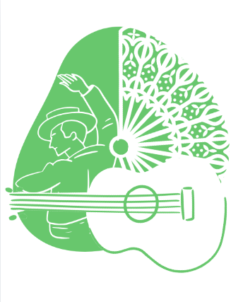

🎵 Festival Digital de Artistas Andaluces

Bienvenidos al Festival Digital de Artistas Andaluces.
Durante este proyecto vamos a conocer algunos artistas andaluces y descubrir su música, su historia y su importancia para nuestra cultura.
Trabajaremos en equipo para investigar, escuchar canciones, buscar información y crear una presentación digital utilizando Canva.
Al finalizar, realizaremos un Festival Digital donde cada grupo presentará a su artista mediante una exposición oral y una pequeña interpretación musical.
¿Qué vamos a aprender?
🎵 Conocer artistas andaluces.
💻Utilizar herramientas digitales de forma responsable.
👥 Trabajar en equipo.
🎤 Expresarnos mediante la música y la creatividad.
Herramientas que utilizaremos
- Canva
- Padlet
- Ordenadores o tabletas
- Pizarra digital
Producto final
Crearemos un Festival digital de artistas andaluces en el que cada grupo presentará a un artista mediante una presentación digital y una pequeña actuación musical.